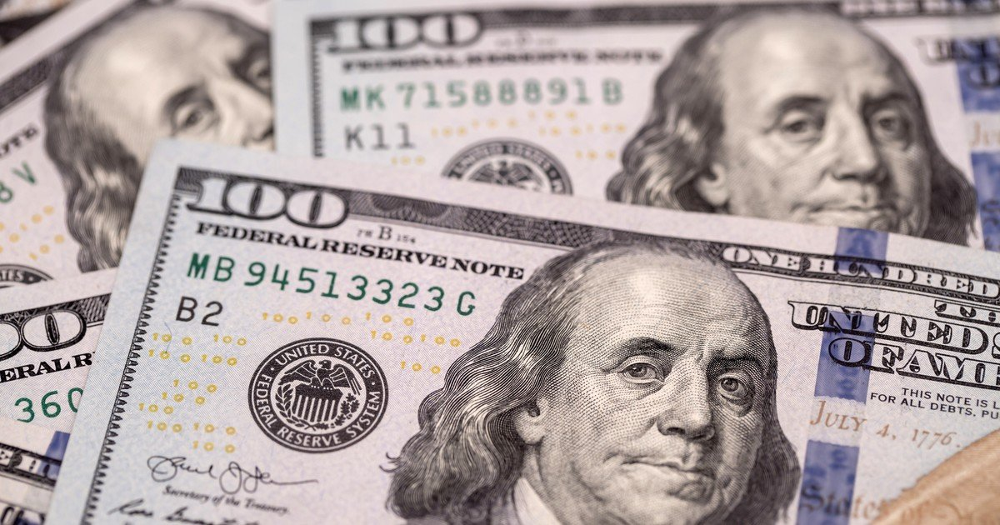

Cómo comprar dólares al mejor precio

Con una inflación en ascenso, ahorrar se vuelve cada día más difícil. Por
eso acá te explicamos paso a paso cómo obtener dólares al precio más bajo
del mercado.
Primero, sin embargo, deberemos tener en cuenta lo
siguiente:
- Si cobrás subsidio ATP o sacaste créditos a tasa cero, no podés comprar dólares.
- Si compraste dólares en la bolsa, no podrás comprar "dólar ahorro" hasta transcurridos 90 días.
- Se requiere contar con una cuenta bancaria en pesos y en dólares
Una vez que cheaqueaste si estás habilitido, procedé de la siguiente manera:
- Ingresá a drdolar.com
- Ingresar en la página que tenga el mejor precio de venta
- Chequear que la página esté actualizada y funcionando, ya que algunas tienen un valor desactualizado y no están activas
- Crear cuenta en dicha página y esperar a que termine el proceso de validación de las cuentas bancarias. Puede llegar a demorar hasta un día.
- En horario bancario, abrir una operación y seguir las instrucciones. Normalmente involucra enviar una transferencia a una cuenta provista por el agente de cambios.